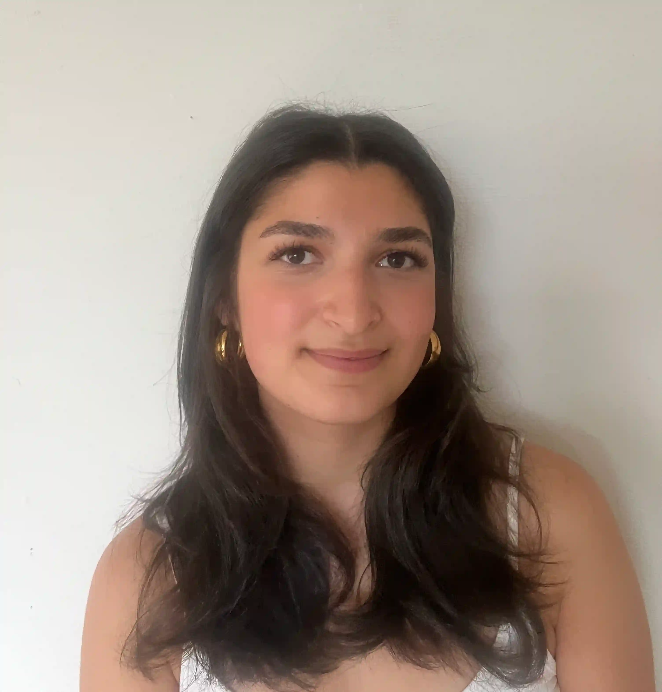

Om mig
Hvem er jeg?

Jeg hedder Aylin, og jeg er 22 år gammel. Siden jeg var lille, har jeg altid elsket teknologi. Jeg har brugt utallige timer foran min computer – om det har været for at dykke ned i film og serier, eller for at redigere mine egne videoer og billeder. I dag studere jeg til multimediedesigner på København Erhvervsakademi, hvor jeg håber på en fremtid i den digitale verden.
Aylin S. Hashgin
Kontakt
- Borgmester Jensens Allé 2, 2100 København
- saberaylin@gmail.com
- +45 71100098
Fødselsdag
02/09-2002
Dansk
Modersmål
Engelsk
Flydende (skrift og tale)
Dansk
Godt kendskab (tale)